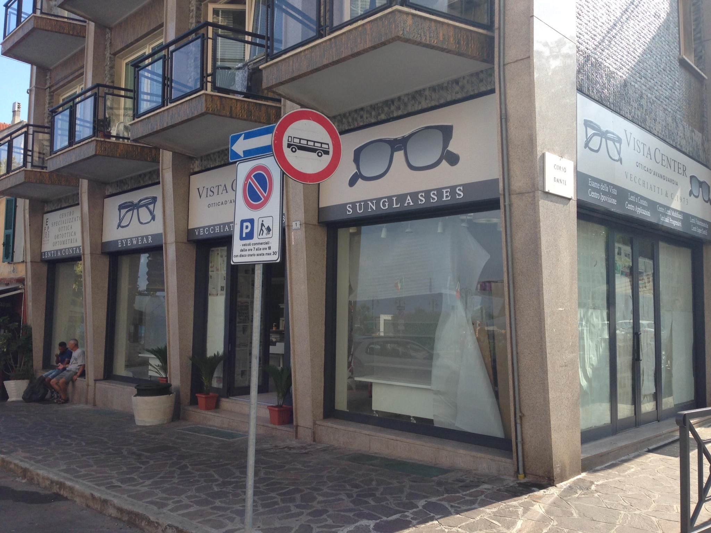
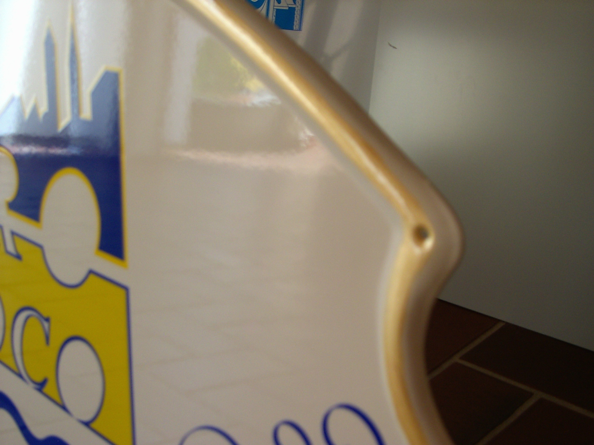
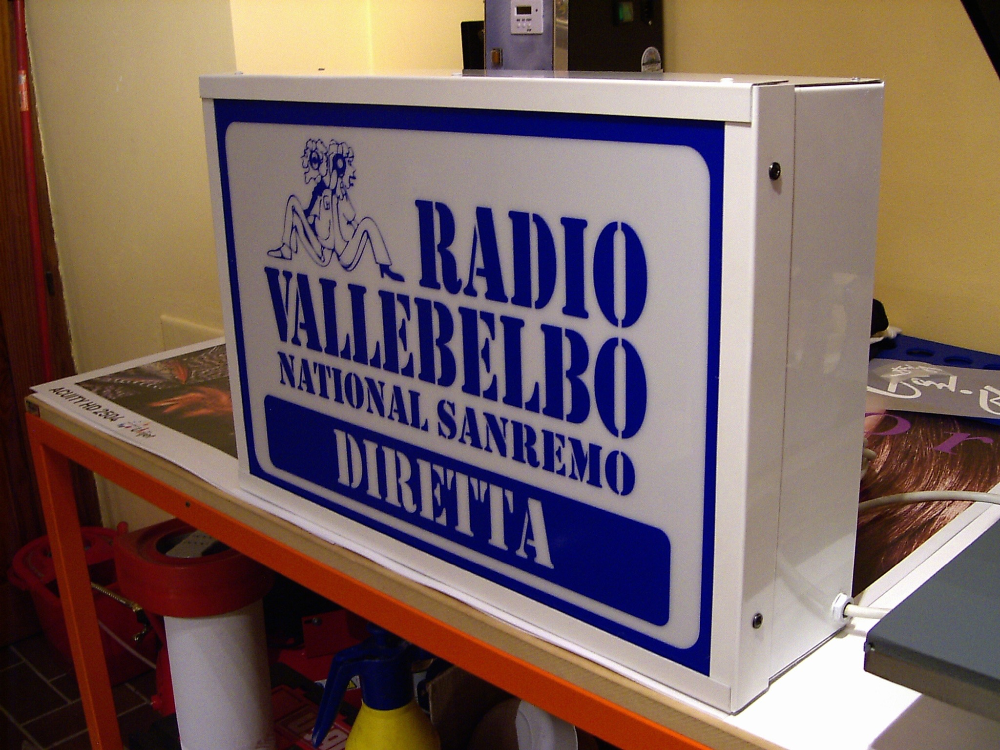

<div class="container imginsegne">
    <div class="row">
        <div class="col-12 col-md-6">
            <div class="jumbotron my-2">

                <p class="text-justify">
                    <strong>Punto99</strong> è in grado di realizzare <strong> insegne</strong> luminose e non,
                    mono e bifacciali, <strong>Pannelli rigidi</strong> e <strong>insegne antichizzate</strong>
                    per segnalare e promuovere la tua azienda.
                </p>
            </div>
        </div>

        <div class="mx-auto">
            <a href="images/insegna1.jpg" data-lightbox=gallery>
                
            </a>

            <a href="images/insegna2.jpg" data-lightbox=gallery>
                
            </a>
            <a href="images/insegna3.jpg" data-lightbox=gallery>
                
            </a>


        </div>

    </div>
</div>
